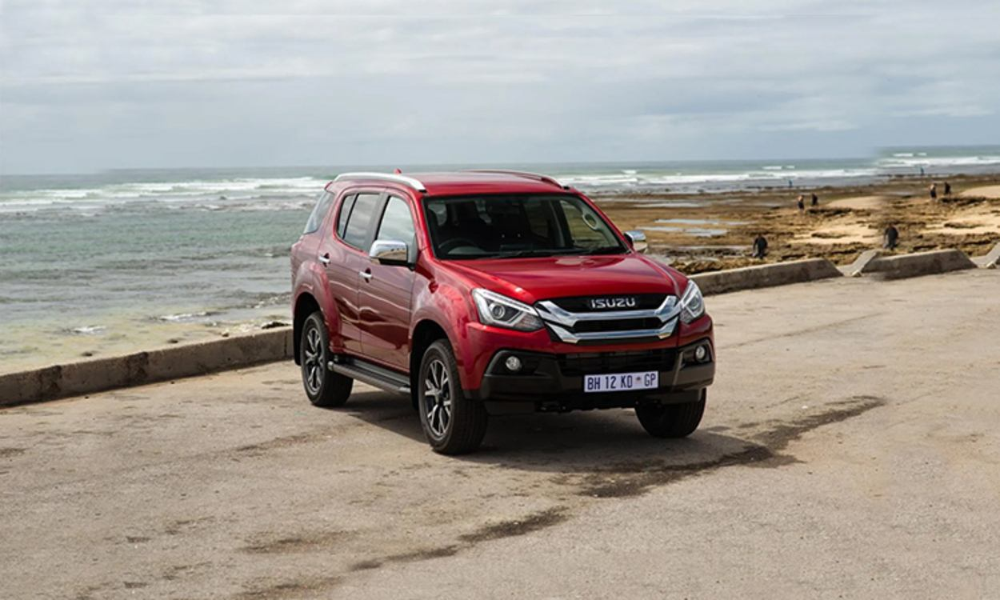

Mux Specs, Features and Price
The Isuzu MU-X has 1 Diesel Engine on offer. The Diesel engine is 1898 cc . It is available with Automatic transmission.Depending upon the variant and fuel type the MU-X has a mileage of 12.31 to 13.0 kmpl & Ground clearance of MU-X is 230mm. The MU-X is a 7 seater 4 cylinder car and has length of 4825mm, width of 1860mm and a wheelbase of 2845mm.